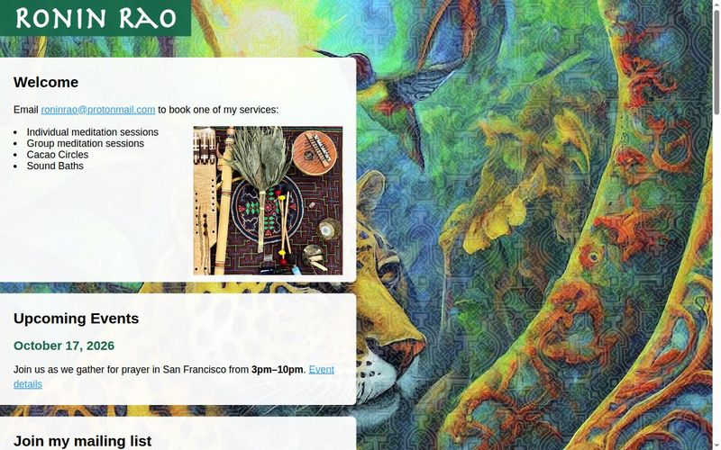

Sandro Turriate
Ronin Rao
A medicine guide and musician offering a heart-centered, grounded approach to healing through sound baths, individual and group meditation, and cacao circles. His training is rooted in the Shipibo tradition of Peru, and includes psilocybin facilitator training and the Zendo Project's integration program.
Visit website ↗